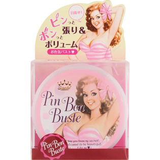
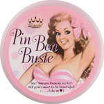

返回列表
产品名称：スキャンダル ピンポンバスト

石澤研究所 スキャンダル ピンポンバスト １５０ｍｌ
メーカー 石澤研究所
JANコード 4992440012728
商品の特徴
ピンッと張り＆ポンッとボリューム
- 成分・分量
- ＜全成分＞
水、BG、プエラリアミリフィカ根、グリセリン、エタノール、アスコルビン酸、マンゴスチン果皮エキス、カラギーナン、キサンタンガム、酸化チタン、クエン酸Na、ヒドロキシエチルセルロース、タルク、酸化鉄、シアノコバラミン、リボフラビン、ペンチレングリコール、メチルパラベン、水酸化Al、香料
- 用法及び用量
- クリームを少量ずつ塗りながらバストを包み込むように塗布してください。（両バストにサクランボ1粒弱が適量です）